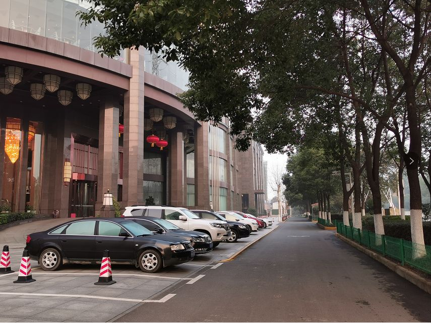
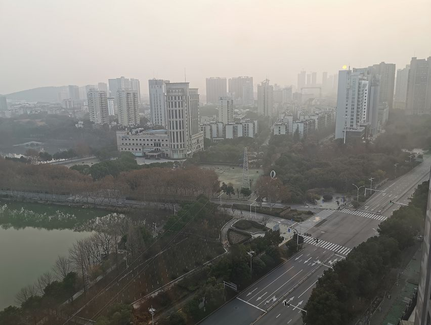

武汉“封城”后，志愿者车队故事
原文链接 备份链接 武汉“封城”后公共交通停运，自1月24日开始，路上开始出现民间自助形式的车队。私家车主轮班，车队昼夜不停，每天接送医护人员、运输医疗物资，每送一趟要用75%酒精浓度的消毒液喷洒一遍车辆，油钱、防护口罩、消毒液都自掏腰 …

武汉封城后的逆行者


空荡荡的武汉城区。自1月23日10时起，武汉全市关闭公共交通。本刊记者/黄孝光 摄（下同）
1月23日，武汉封城，此时，护士梅伊和胡云云成了逆行者。
她们是大学同学，毕业后分别去了武汉华润武钢总医院和武汉市第一医院。大年初一这天，她们各自从黄冈和天门出发，返回武汉待命。
即便动身前就已得知有同事疑似感染，但她们并未犹豫。梅伊辗转寻找司机，万不得已时，还拔打过110和120寻求帮助。哺乳期的胡云云则在接到医院通知后，立即让丈夫开车相送。
武汉封城之后，有很多像梅伊和胡云云这样的逆行者，他们在用各自的方式，维持着这座城市的运转。
社区司机
疫情发生后，兼职网约车司机陈飞的车钥匙就被家人收起来了。三天后，家人再三质问才得知，依旧早出晚归的陈飞，偷偷拿了备用钥匙，当起了义务接送医护人员上下班的志愿者。
陈飞是突然动念的。“我们武汉人没有这方面的经验。一开始听医院的朋友说很严重，我们口罩都没戴。”后来看到网上铺天盖地的消息，他这才警惕起来。某个抖音视频里，医生像军人一样连成一排，睡在地上。陈飞受到触动，在别人推荐下加入了青山区的医护人员免费接送群。
接送群里，有医生工作十几个小时后走路回家。
陈飞印象最深的乘客是护士梅伊。大年初一中午，梅伊从黄冈武穴市出发，回武汉华润武钢总医院上班。从老家到单位不到100公里，但梅伊出价1000元才找到司机。黄冈司机只能将她送到两市交界的龚家岭收费站，后半程需要陈飞接力。
一上陈飞的车，梅伊就哭了起来。“家人并不同意她回武汉，她也是做了很艰难的思想工作。”一个提前到岗的室友已经疑似感染了新冠肺炎，这让梅伊既伤心又害怕。
即便如此，陈飞在接送群里发现，自封城至今，每天仍然有不少医护人员从外地赶回武汉。群成员不断壮大，陈飞所在的3个群，如今已汇集1000多名志愿者。
1月26日，为了限制人员流动，武汉中心城区区域实行机动车管制。与此同时，为保障社区居民应急出行问题，武汉交通部门征集了6000辆出租车或网约车，直接进社区服务。武汉共计1159个社区，每个社区至少配车4辆，由社区居委会统一调度使用。
陈飞报名成为社区司机的一员，比以往跑得更勤了。他每天清早7点出门，先送医护人员上班，再到东山亭社区报到。按要求，他需要对每名乘客先行测体温排查，因为发热病人只能由救护车运送。这几日，他每天都会遇到发热的病人。
1月28日这天，陈飞一共出车6趟，其中有两趟送的都是去中南医院做肾透析的乘客。因为一些医院被征用来收治发热患者，大量需要做透析的病人需要另寻他院。他们四处奔走寻医，成为封城后独特的一群逆行者。
每次乘客下车后，陈飞都会把四个车门全部打开，用酒精擦拭座椅和门把手。在他的一个130多人的微信群中，有30余人都是社区司机，其中已经出现了2名感染者。
陈飞分辨不出谁是病毒携带者。他不敢大意，每晚下班后，会先在楼下把防护服撕毁、装袋、扔进垃圾桶；进家门后，将衣服放在阳台，独自吃饭，把自己关在房间隔离。

物资运输队
这是一个由500多辆车构成的庞大车队，从轿车、面包车、小货车，到带集装箱的大货车，分布在武汉各区；各区设有车队长，听从总群的协调调度。如今它是武汉医疗物资的民间集散中心，各地企业或热心人士捐赠的物资，有不少经由这些车队分发，送往武汉的各家医院。
“我们希望医护人员能得到足够的保护，全身心投入到救治中。”车队的组建人雪情说。
事实上，武汉封城之前，医疗耗材短缺的危机已经发生了。提前得知情况的雪情联合身边朋友，第一时间在网上发起募捐。
1月23日起，二十多家武汉医院陆续通过网络，向社会公开征集口罩、防护服等医疗物资。更多的民间力量响应，试图帮助医院摆脱困境。
然而，同一时间，武汉启动封城，进出通道关闭，大量运输物资的车辆无法进入。
发现这个问题后，雪情等人一方面利用当地车友群组建车队，招募大量的司机志愿者，另一方面协调有关部门，为志愿者们开辟绿色通道。他们组建了信息搜集、仓库管理、物资运输等小组，核实好各方供需信息后，再把运输任务层层下发给司机志愿者。接到任务的司机随后到武汉各高速路口接货，然后将物资运抵市内各医院一线。
“本来司机接到货后，是要先拉回仓库的，但是这两天疫情比较严重，我们就让他们拿到货后直接去发，发完再回仓库结算登记。”雪情说。
资源终究是有限的，志愿者们需要判断不同医院的轻重缓急，将物资优先派发给最为急缺者。
1月25日，蕲春县疾病防控中心主任向雪情求助，当地已经有医务人员因为防护问题被感染了。雪情答应帮他调配200套防护服和1万个口罩。但第二天，团队得知湖北省妇幼保健院与武汉大学附属中南医院物资即将告罄，医护人员的工作状态近乎“裸奔”，便决定将已有物资先给他们。
“每家医院都在想方设法为各自的医护人员寻求保护，不过医院之间也很体谅。”雪情提到，两天前他们给武汉市普爱医院送物资，但普爱医院得知另一家医院情况更严重后，主动提出先送给对方。
组建车队后，打动雪情的事每天都在发生。
1月25日，有个志愿者送物资时，对接的医生临时上了手术台抢救病人，没接到电话。司机等得着急，因为跟另一家医院的医生约好接他下班，时间快到了。他后来先去接人，接完后没顾及吃饭，又赶回医院完成物资交接。
1月26日晚上，另一个志愿者去仙桃接货，车轮陷进沟里，手机也没电了。在野外了耗了一夜后，得救的他马不停蹄赶赴仙桃，向团队表态“没接到物资就不回来”。
局势越来越紧张了。继封城之后，1月26日0时起武汉再行“封区”政策——除经许可的保供运输车、免费交通车、公务用车外，中心城区区域实行机动车禁行管理。这意味着，私家车不能再自由流动。
雪情连夜去找政府和有关部门协商，最终成功领到志愿者通行证。
1月26日晚，湖北省委副书记、省长王晓东在新闻发布会上提到，“尽管通过各方面努力，紧缺有所缓解，但仍然是当前面临的最突出、最紧迫的问题之一。”
雪情的微信里，各志愿者群消息不断，随时都有找上门的捐助者和寻求捐助者。“物资依然很缺。朗朗、小A、希希、小曦、区长、孟高管、阿正、好好先生……我每天都提醒一块努力的伙伴，别自己舍不得穿防护服，光顾着别人了。”

看不见的陪伴者
对每个从武汉站下车的人，乘务员都会郑重提醒：一旦出站，短时间内你将无法离开这座城市。武汉街头，零星行人步履匆匆，连排商户闭门歇业，间或有诊所虚掩着门。在这座被清空的城市，压抑感伴随传染病一同蔓延，作为心理咨询师，杨莹通过网络、通过电话，接收到从这座城市的不同角落里传送来的情绪。
封城后至今，杨莹待在家中，没再下过楼。她所住的小区有一人确诊新型肺炎，为此整个小区被封锁，禁止出入。
“我情绪控制还是比较好的，但封城第二天，我一醒来就莫名地哭，于是想，可能很多人都需要一个压力的出口吧。”杨莹联合几个有心理咨询经验的朋友，临时开通了“心灵陪伴热线”。他们在宣传海报打上“封城不封爱”的口号，连日来接听的电话不断。
“我妻子要生了怎么办？”一个妻子预产期将近的丈夫问起杨莹。他担心叫不到救护车，又害怕送妻子到医院后感染病毒。
一个从未去过华南海鲜市场的中年男子，怀疑自己携带了新型冠状病毒，已连续几顿没有进食。妻子着急之下向杨莹求助。在杨莹的疏导下，这名男子终于开口吃饭。
留学生马丁3天睡不着觉了，他不了解冠状病毒，紧张和焦虑让他的身体产生疼痛感。去药店路上他给杨莹打电话，用不流畅的中文说：“外面怎么那么恐怖？”
还有子女委托杨莹，陪独自留守的老人说说话。
对于他们的际遇，杨莹感同身受。她是宜昌人，30年前因为求学来到武汉。她认为武汉人说话的口吻，没有南方人的柔和，又不像北方人那么干脆，刚来时一度很不习惯。30年后，她已然适应甚至依恋这座江城。
杨莹认为这是一场漫长的战役，可怕的不止有病毒，还有长时间压抑后心灵的坍塌。而让她最为担心的是抑郁症患者，“一旦处在这种封闭的环境，他们的情绪就像炸弹，随时可能爆炸。”
不断攀升的确诊病例数字、弥漫在网络上的各式未经证实的信息，还有来自其他城市的歧视，都让身陷围城里的武汉人或多或少感到沮丧、无助和焦虑。
“武汉人最紧张、最慌乱、最恐惧的日子，已经过去了，这个时间点应该是大年初一。”方方说，“现在，武汉人呆在家里安心了许多，前几天的惶惶不安和恐惧也在逐步消减。”这位在武汉生活了60多年的作家认为，武汉人听话又通达，幽默又坚强。
（应受访者要求，杨莹为化名）
值班编辑：罗晓兰
推荐阅读
▼


原文链接 备份链接 武汉“封城”后公共交通停运，自1月24日开始，路上开始出现民间自助形式的车队。私家车主轮班，车队昼夜不停，每天接送医护人员、运输医疗物资，每送一趟要用75%酒精浓度的消毒液喷洒一遍车辆，油钱、防护口罩、消毒液都自掏腰 …
原文链接 备份链接 他觉得自己像一个巨大的电插座，身上插满了孔，求助信息和资源提供信息被一起插到他身上，他再来牵线对接。 文 | 谢婵 李叙瑾 编辑 | 小豆 22岁的梅浩宇窝在出租屋里，吃光了13包泡面和3大袋零食，每天睁开眼睛，他就开 …
原文链接 备份链接 ********** *****白天，肖昌文群里的400多名司机开始轮番拨打三位警官的电话，表达支援一线的想法、申请特别通行证。**********当天晚上，肖昌文终于拿到了两张“疫情防控特别通行 …
原文链接 备份链接 武安医生（化名）所在的医院是孝感市三家抗疫医院之一。距离武汉66公里的孝感是距离武汉最近的地级市，截止到1月28日上午，有确诊病例173例。与暴风眼武汉一样，以孝感为代表的武汉周边小城也正在经历着决战时刻。 坐诊之 …
原文链接 备份链接 在这场抗击新病毒的战争中，一线医护人员不得不为自身防护揪心，他们和医院、捐赠人一起被迫卷入一场医疗物资的募捐赛 文 |《财经》记者王丽娜 辛颖 编辑 | 王小 这是历次疫情中，一线医院大批量第一次直接向公众募捐，也是 …